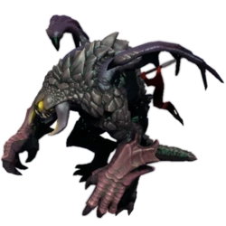
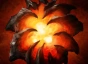
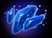
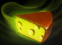
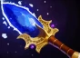
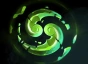

| Рошан - нейтральный крип, имеющий огромное количество здоровья. Его убийством обычно занимается вся команда, иначе его убить тяжело. Помимо прочего, его расположение почти симметрично относительно двух сторон. Рошан содержит в себе Эгиду, из-за чего является желанным для обеих команд. (другие артефакты появляются после нескольких убийств Рошана) Убивая Рошана, надо помнить, что враг может ворваться в самый неожиданный момент!       |